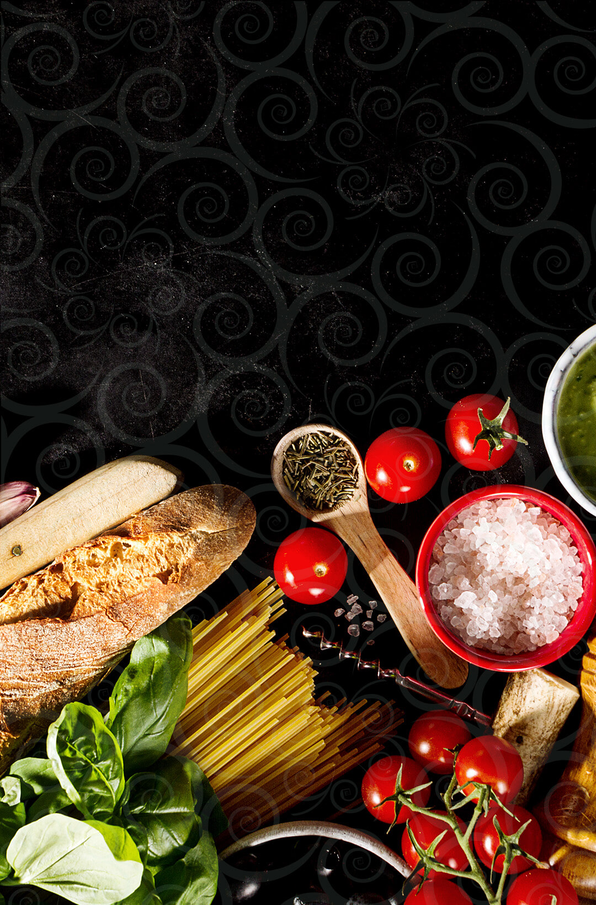
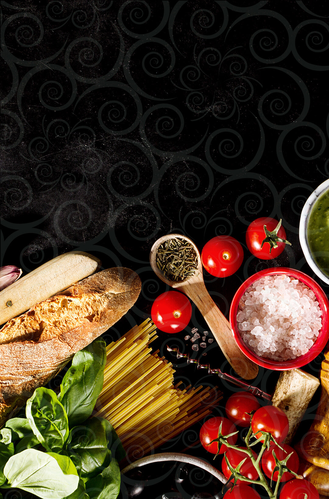

A La Pezzi foi criada através de grande influência italiana.
No início do século XX, meus bisavós imigraram para o Brasil e se estabeleceram na região da Serra Gaúcha.
A influência da culinária italiana foi passada de geração em geração. Cresci vendo minha avó preparar verdadeiras delícias e aprendi com minha mãe a arte de preparar uma boa massa.
Hoje, reunindo a tradição dos recheios à novos sabores, a La Pezzi é especializada em massas grano duro utilizando semolina e ovos. Os recheios são isentos de conservantes, assim como os molhos.
As massas La Pezzi unem sabor, produtos selecionados e paixão pela boa culinária.
Ana Letícia - Chef La Pezzi

As massas são feitas de trigo grano duro , este tipo de trigo é excelente para uma massa firme.
Grano Duro
Feito para você que não tem tempo de cozinhar. Com embalagem prática, destampou, aqueceu, comeu!
Prático
Feito com ingredientes selecionados e frescos. Um exemplo de frescor, nosso manjericão é cultivado em casa!
Ingredientes
Logo após ficarem prontos os produtos são congelados na hora, necessitando de 0% de conservantes.
0% Conservantes
{kind=link}
{kind=link}
{kind=link}
{kind=link}
O que os clientes falam da La Pezzi nas redes sociais?
(Comentários na nossa fanpage do facebook)
“ A lasanha mais gostosa que comi nessa vida! E essa massa? Sem comparações, continue com esse lindo trabalho, parabéns ! ”
Leoclaudia Carneiro - Cliente La Pezzi
“ Massas e molhos com sabor caseiro delicioso! Recomendo o nhoque de batata baroa e o molho bolonhesa. Com certeza vou pedir mais vezes ! ”
Ana Carolina Gutierrez - Cliente La Pezzi
“ O Ravioli de carne é um deslumbre! Uma delícia daquelas de dar água na boca.”
Leo Torresini - Cliente La Pezzi